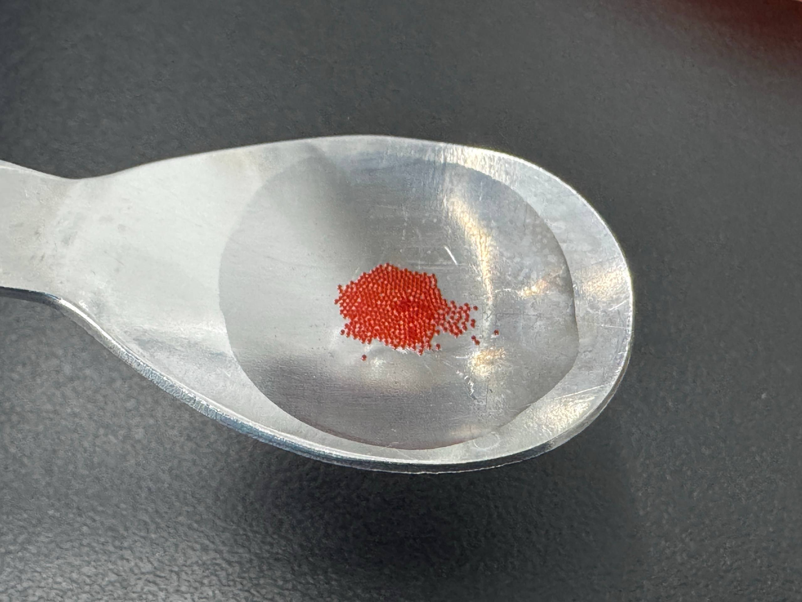
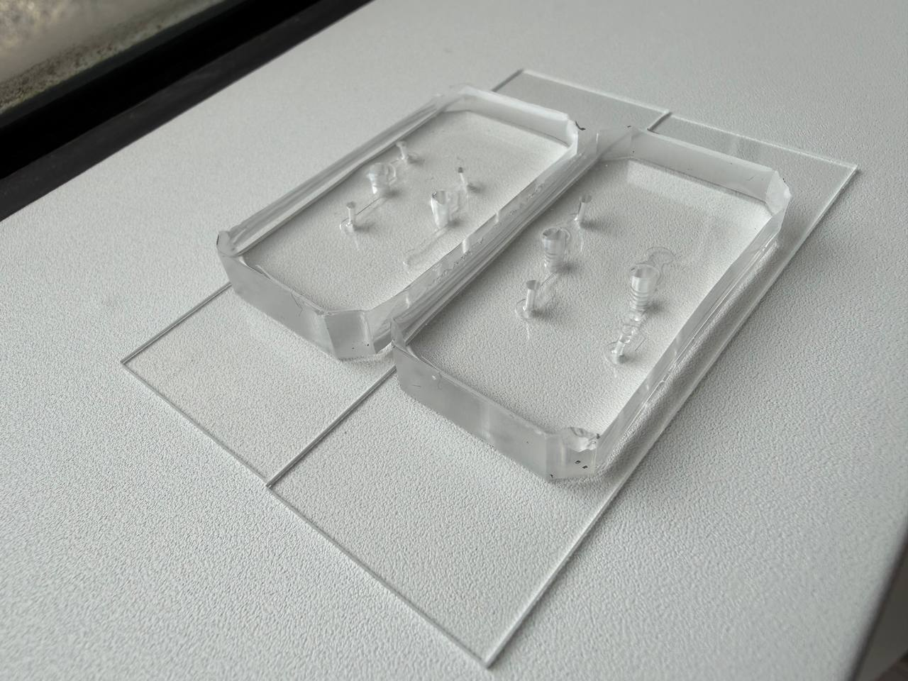
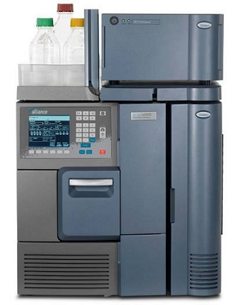

Lab-on-a-Chip과 Microfluidics를 기반으로 식품의 크기 · 형태 · 식감 · 기능성 소재 전달을 설계하고, Bioanalysis와 산업 PoC로 연결하는 대학 기반 융합 플랫폼입니다.
Microfluidics는 바이오·의료 분야에서 빠르게 발전해 왔습니다. 본 플랫폼은 이를 식품의 형태·식감·기능성 소재 제조에 적용하고, 대학의 식품·조리 전문가와 분석 인프라, 지역 요식업 네트워크를 연결해 실제 시장에서 검증하는 것을 목표로 합니다.
Lab-on-a-Chip, droplet generation, passive fluidics, micromixing, 3D digital design을 식품 제조 문제로 확장합니다.
식용 micro-pearl은 크기와 형태를 즉시 확인할 수 있어 빠른 시제품·메뉴 실증에 적합합니다.
초기 식감·형태 설계에서 출발해 기능성 소재 encapsulation과 nanoformulation으로 연구가 확장됩니다.
한 가지 제품을 만드는 프로젝트가 아니라, 식품 원료를 원하는 크기·형태·제형으로 제조하고 분석하는 공통 기술 플랫폼을 구축합니다.
기존 수작업·노즐형 spherification에서 정밀 제어하기 어려운 소형·균일 식용펄 영역을 목표로 합니다. 크기뿐 아니라 구형도, 경도, 막 두께와 원료 조성을 함께 최적화해 음식별 새로운 식감을 설계합니다.

연구팀이 droplet 기반 공정을 이용해 제작한 실제 Micro-Pearl 시제품입니다. 현재 단계에서는 제조 가능성을 확인한 PoC이며, 다음 단계에서 식품용 조성으로 전환하여 입자 크기·균일도·구형도·경도·식감을 정량화할 예정입니다.
연구팀이 실제 제작한 microfluidic chip과 droplet generation 장면입니다. 향후 식품용 소재와 유로 조건으로 전환하여 크기제어형 edible micro-pearl 제조를 검증합니다.
인삼·홍삼을 첫 번째 고부가 실증소재로 적용합니다. 단순한 식용펄 제조를 넘어, 연구소의 HPLC 분석역량을 연결해 원료부터 제조 후 성분까지 추적합니다.
초기 Micro-Pearl을 통해 빠르게 시장과 파트너를 만들고, 동시에 개발 중인 micromixer와 passive fluidics를 기능성 소재 nanoformulation으로 확장합니다.

주기적 groove/constriction 구조의 micromixer와 passive drive를 결합해 유량 변화에 강건한 혼합을 목표로 합니다. 향후 DLS(size/PDI)와 HPLC를 이용해 제조 성능을 검증합니다.
기능성 소재 nanoformulation을 다시 식용 micro-pearl 내부에 탑재하는 장기 연구개념입니다. 시각적·감각적 식품 경험과 고도화된 제형기술을 하나의 플랫폼으로 연결합니다.
향후 세포기반 독성 및 생물학적 평가를 연구 파이프라인에 연결합니다. 세포시험 결과는 식품의 법적 안전성 또는 인체 기능성을 직접 의미하지 않으며 연구 단계별 적절한 검증체계를 적용합니다.
향후 도입 예정인 Physical AI 기반 조리·제조 인프라와 연계하여 원료, 펄 크기, 생산량, 토핑 위치 등을 디지털로 제어하는 자동화 식품제조 연구로 확장합니다.

인삼·홍삼 적용 시 HPLC 기반 진세노사이드 분석을 통해 원료 특성과 제조 전후 성분을 확인하는 연구 파이프라인을 구축합니다. 향후 물성평가와 세포기반 평가를 단계적으로 연계합니다.
Food-Tech는 연구소의 새로운 응용축입니다. 의료용 전처리소자·나노합성기술 연구는 지속하면서, 동일한 microfluidics 원천기술을 식품과 뷰티 산업으로 확장합니다.
혈액 전처리 · 세포 분리/세척 · 나노분리 · IVD 전처리 시스템
Micro-Pearl · 식감/형태 설계 · 기능성 소재 · Nanoformulation
형상제어 화장품 입자 · Microencapsulation · 기능성 소재 제형화
Micro/Nano Food Engineering Platform은 랩온어칩·마이크로플루이딕스 기술과 푸드테크·인삼 응용을 하나의 연구·산업화 흐름으로 연결합니다. 남정훈 교수와 한병조 교수가 공동책임으로 플랫폼을 추진합니다.
AI-바이오분석특화연구소 연구소장 · 바이오테크과 학과장
Lab-on-a-Chip · Microfluidics · Droplet · Bioanalysis · Micro/Nano Formulation
FoodTech · Ginseng Application
인삼 기반 식품 응용 · 식품 PoC · 푸드테크 융합 및 산업 적용
LAB-ON-A-CHIP → FOODTECH (GINSENG) → ANALYSIS → INDUSTRY PoC
식품·원료·외식 기업과의 공동연구, 시제품 개발, 현장 PoC 및 기술사업화를 위한 협력 플랫폼을 구축합니다.